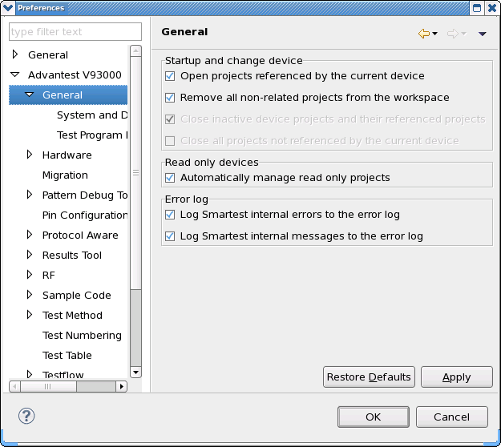

General preference page
You can change the following preferences on the preference page.
Option |
Description |
|---|---|
Open projects referenced by the current device |
Use this option to open the projects referenced by the current device when you start or change to it. |
Remove all non-related projects from the workspace |
When you start SmarTest or change device, only the current device and the projects referenced by the current device will be displayed. |
Close inactive device projects and their referenced projects |
Use this option to close all the inactive device projects and their referenced projects when you start or change to another device. |
Close all projects not referenced by the current device |
Use this option to close all the projects not referenced by the current device when you start or change to it. |
Automatically manage read only projects |
If you select this option:
If you clear this option, it will not be sure that the read only projects can be imported in the workspace successfully. |
The following displays the General preference page.

Functional changes
- Introduced before SmarTest 6.3.2
- SmarTest 6.5.3: New option Remove all non-related projects from the workspace.